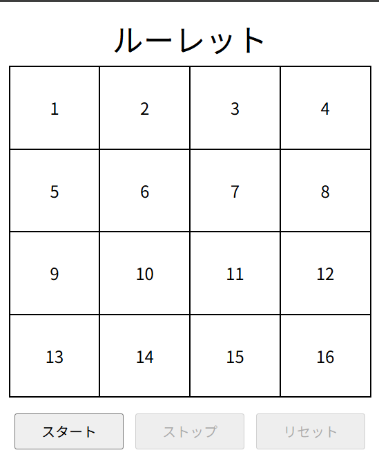
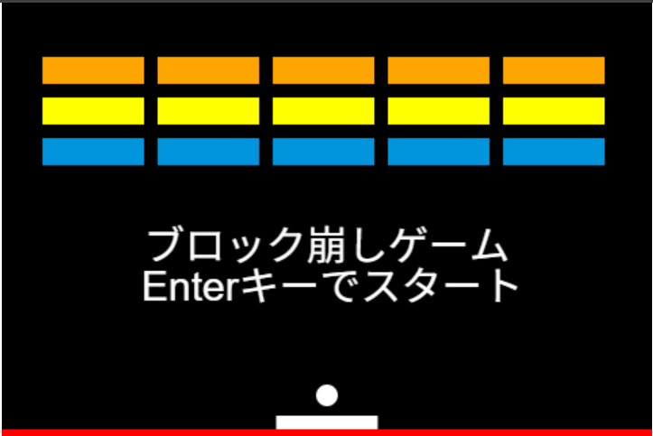

長所
- ・継続力があります。
- ・忍耐力があります。
好きなこと
- ・読書
- ・プログラミング
- ・スマホゲーム(原神、崩壊スターレイル、モンスターストライク)
- ・筋トレ・ストレッチやランニングなどをして健康を維持すること
- ・アナログ・デジタルを問わない広い意味でのシステムやものごとの仕組み
学歴にまつわるエピソード
高校生の頃、化学の中間テストがありました。テストの出題傾向の多くは、私の苦手な化学式の計算問題であり、熱心に勉強をしましたが、結果は赤点でした。
後日、計算問題の疑問点について、職員室の前で、悔しさのあまり泣きながら質問をしていました。
その勉強熱心な姿勢が職員室の間で、教職員の噂となりました。
訓練経歴にまつわるエピソード
2Dのタワーディフェンスゲームを、就労移行支援事業所の利用期間に、ゲームエンジンであるUnityにて個人制作いたしました。制作を行う過程で、ゲーム制作が未経験であり、専門性が高いUnityを扱う苦労が大きな壁でした。その壁を乗り越え、生まれて初めてひとつのゲームとしてカタチにできたことは、大きな喜びがありました。
職歴にまつわるエピソード
ある会社で、Amazonに出品する中古品カメラを扱う業務担当をさせていただきました。
業務の中でも、中古品カメラが梱包されたダンボール箱を開ける、開梱という手順がありました。
入社当初の私は、開梱でダンボール箱を持ったまま、ボーっと考え事をしていたそうです。その当時から2年半以上が経過し、今の私と比較をしてみますと、確かに計画や目標をあまり決めずにボーっと過ごしている時間が多くあったと感じています。
ポートフォリオの一覧
説明動画

